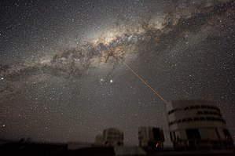

Welcome to the universe, oh no, sorry, you are already here haha.
you understand what i want to say, ok first lets talk about the universe
The universe is everything. It includes all of space, and all the matter and energy that space contains. It even includes time itself and, of course, it includes you.
Earth and the Moon are part of the universe, as are the other planets and their many dozens of moons. Along with asteroids and comets, the planets orbit the Sun. The Sun is one among hundreds of billions of stars in the Milky Way galaxy, and most of those stars have their own planets, known as exoplanets.
It includes planets, stars, galaxies, and all other forms of matter and energy. The Big Bang theory is the prevailing cosmological description of the development of the universe. According to this theory, space and time emerged together 13.787±0.020 billion years ago, and the universe has been expanding ever since the Big Bang. While the spatial size of the entire universe is unknown, it is possible to measure the size of the observable universe, which is approximately 93 billion light-years in diameter at the present day.
The Milky Way is the galaxy that includes our Solar System , with the name describing the galaxy's appearance from Earth: a hazy band of light seen in the night sky formed from stars that cannot be individually distinguished by the naked eye
It is estimated to contain 100–400 billion stars and at least that number of planets. The Solar System is located at a radius of about 27,000 light-years from the Galactic Center, son the inner edge of the Orion Arm, one of the spiral-shaped concentrations of gas and dust.
You can see all the moons here: CLICK ME!
Learn a little bit more of earth